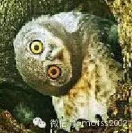
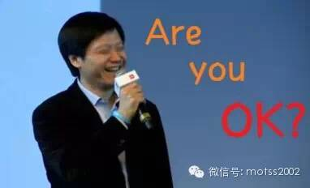
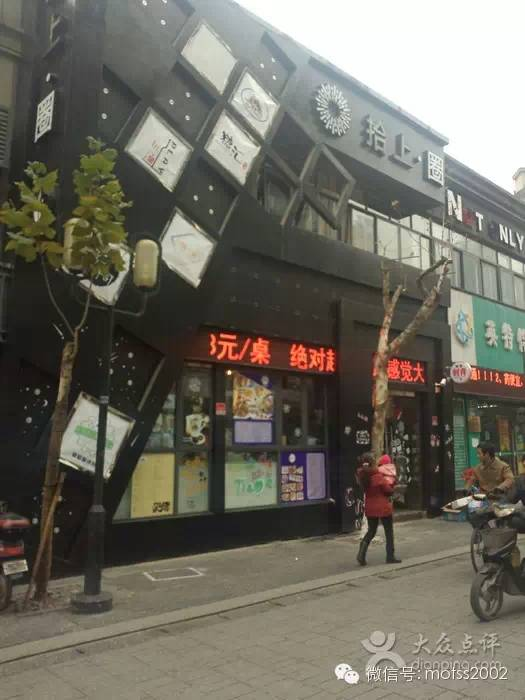

首先登场的是以一曲绕梁三日的《岁月轻狂》雄踞校广播电台、在运河边露天KTV开唱分分钟成为中老年妇女偶像的@引泉同学。
（偷偷告诉你们，真人绝对比头像帅很对倍！！）
从当年舞台上的十佳歌手到如今台下的评委，他对选手的期望是“不走调，节奏准就有高分了，声音好或者表现力丰富就更好了”（选手们快拿出纸笔做小抄好吗？！我只能帮你们到这里了），因为“一般学院的比赛就是这个要求，要达到音准节奏基本无误其实也是很难的”。
评委都是如此正经的存在吗？NO！NO！NO！看看每姐是怎么回答的
嗯...嗯...各位选手可以考虑色诱评委了
先是给了我一张治好多年颈椎病的皂片的禾丰同学

加微信之后，一条朋友圈亮了......
嗯禾风同学带来的曲目是不是也是这种style呢？
自称“节奏感惨不忍睹”，为何在高中拿下十佳？
数学老师做评委，背后有何隐情？
是故意放水还是麻痹对手？
请看周日的《今日苦瓜》！
接下来是白泽傲娇受，本次活动中最年轻的同学，一位只有十七岁的小盆友，他还是小米脑残粉，Are you OK?!!!

正在学习韩语的他并没有选择“音域跨度大，有专人负责中音和高音”的韩语歌，而选择了一首神秘的网络歌曲。小鲜肉机智的选择能否征服老腊肉评委？现场见分晓......
下一位是攻大（误）某学院十佳歌手，准备了三首Beyonce的Zombie同学
（居然要学长帮他P图...帽子P畸形了一快凑合看吧...)
这么霸气侧漏的歌手，不仅不断流露对评委"专业性"的质疑，在问及有没有经过专业训练时，只是淡淡地回了一句：“倒没有专门训练，我也并不是很擅长高音，不过这个音还好啦<Halo的高音叫“还好”吗？Are you OK？> 多听听欧美歌手，可以自己学习的。”
唱什么劈什么的我先去厕所哭一会......
然后Zombie同学要我把他写得可爱一点，不要影响他勾搭~要做一个安静的“唱Halo的小受”，对于这种行为，手机屏幕前看不下去的亲赶紧把他收掉好吗！
最后一位是熳境同学。据路边社消息，他是这次活动中年纪最大的参赛者，是什么让他放下身段和小朋友们同台开撕呢？
（先不吐槽这又一张要我加特效的低清厚码的照片，“要发就发真照片，但是我又不想高调曝光”的权衡之作）
答案是对音乐的真爱！
抱着一颗平常心的他，将比赛看作一个“群K歌的机会”（好像哪里不对）。
他将带来一首同志圣歌（有选曲加分昂）~

请关注我们的微信公众号motss2002获取更多信息！~